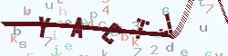

Think\Verify类可以支持验证码的生成和验证功能。
下面是最简单的方式生成验证码：
$Verify = new \Think\Verify();
$Verify->entry();
上面的代码会生成默认的验证码图片并输出，显示如下：

生成的验证码信息会保存到session中，包含的数据有：
array('verify_code'=>'当前验证码的值','verify_time'=>'验证码生成的时间戳')
如果你需要在一个页面中生成多个验证码的话，entry方法需要传入可标识的信息，例如： 验证码1：
// 验证码1
$Verify = new \Think\Verify();
$Verify->entry(1);
验证码2：
// 验证码2
$Verify = new \Think\Verify();
$Verify->entry(2);
可以对生成的验证码设置相关的参数，以达到不同的显示效果。 这些参数包括：
| 参数 | 描述 |
|---|---|
| expire | 验证码的有效期（秒） |
| useImgBg | 是否使用背景图片 默认为false |
| fontSize | 验证码字体大小（像素） 默认为25 |
| useCurve | 是否使用混淆曲线 默认为true |
| useNoise | 是否添加杂点 默认为true |
| imageW | 验证码宽度 设置为0为自动计算 |
| imageH | 验证码高度 设置为0为自动计算 |
| length | 验证码位数 |
| fontttf | 指定验证码字体 默认为随机获取 |
| useZh | 是否使用中文验证码 |
| bg | 验证码背景颜色 rgb数组设置，例如 array(243, 251, 254) |
| seKey | 验证码的加密密钥 |
| codeSet | 验证码字符集合 |
| zhSet | 验证码字符集合（中文） |
参数设置使用两种方式。
实例化传入参数：
$config = array(
'fontSize' => 30, // 验证码字体大小
'length' => 3, // 验证码位数
'useNoise' => false, // 关闭验证码杂点
);
$Verify = new \Think\Verify($config);
$Verify->entry();
或者采用动态设置的方式，如：
$Verify = new \Think\Verify();
$Verify->fontSize = 30;
$Verify->length = 3;
$Verify->useNoise = false;
$Verify->entry();
生成的验证码如图所示：
默认情况下，验证码的字体是随机使用 ThinkPHP/Library/Think/Verify/ttfs/目录下面的字体文件，我们可以指定验证码的字体，例如：
$Verify = new \Think\Verify();
// 验证码字体使用 ThinkPHP/Library/Think/Verify/ttfs/5.ttf
$Verify->fontttf = '5.ttf';
$Verify->entry();
支持验证码背景图片功能，可以如下设置：
$Verify = new \Think\Verify();
// 开启验证码背景图片功能 随机使用 ThinkPHP/Library/Think/Verify/bgs 目录下面的图片
$Verify->useImgBg = true;
$Verify->entry();
效果如图所示：
如果要使用中文验证码，可以设置：
$Verify = new \Think\Verify();
// 验证码字体使用 ThinkPHP/Library/Think/Verify/ttfs/5.ttf
$Verify->useZh = true;
$Verify->entry();
显示效果如图：
如果无法正常显示，请确认你的 ThinkPHP/Library/Think/Verify/zhttfs/ 目录下面存在中文字体文件。
3.2.1版本以上，我们可以指定验证码的字符，通过重新设置codeSet参数即可，例如：
$Verify = new \Think\Verify();
// 设置验证码字符为纯数字
$Verify->codeSet = '0123456789';
$Verify->entry();
如果是中文验证码，可以使用zhSet参数设置，例如：
$Verify = new \Think\Verify();
$Verify->useZh = true;
// 设置验证码字符
$Verify->zhSet = '们以我到他会作时要动国产的一是工就年阶义发成部民可出能方进在了不和有大这';
$Verify->entry();
可以用Think\Verify类的check方法检测验证码的输入是否正确，例如，下面是封装的一个验证码检测的函数：
// 检测输入的验证码是否正确，$code为用户输入的验证码字符串
function check_verify($code, $id = ''){
$verify = new \Think\Verify();
return $verify->check($code, $id);
}